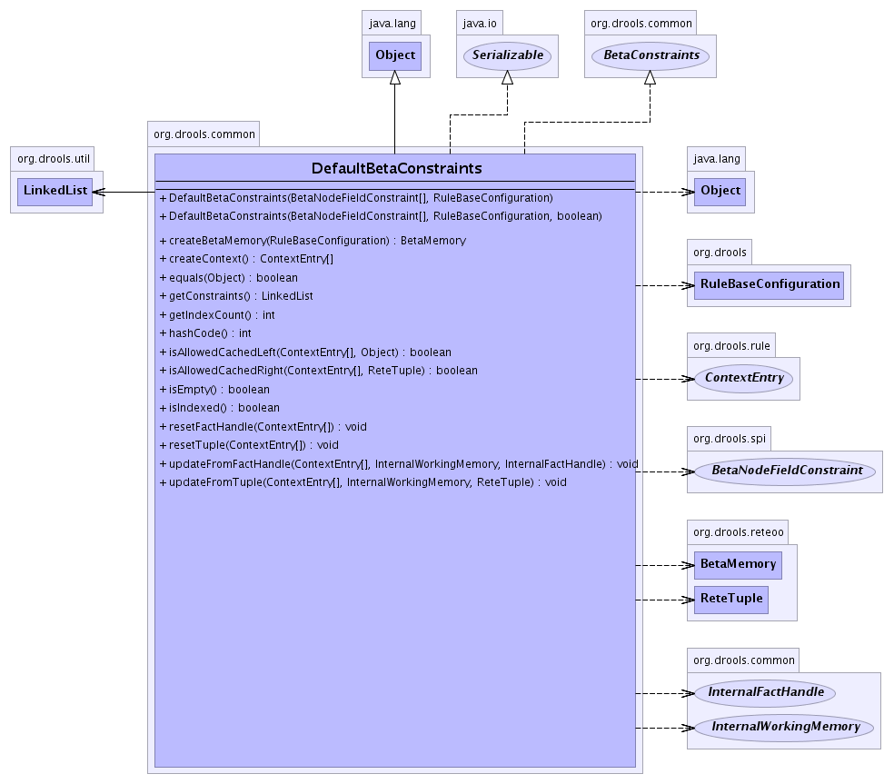

org.drools.common
Class DefaultBetaConstraints
java.lang.Object
 org.drools.common.DefaultBetaConstraints
org.drools.common.DefaultBetaConstraints
- All Implemented Interfaces:
- java.io.Serializable, BetaConstraints
public class DefaultBetaConstraints
- extends java.lang.Object
- implements java.io.Serializable, BetaConstraints
- See Also:
- Serialized Form
-
- 
| Methods inherited from class java.lang.Object |
clone, finalize, getClass, notify, notifyAll, toString, wait, wait, wait |
DefaultBetaConstraints
public DefaultBetaConstraints(BetaNodeFieldConstraint[] constraints,
RuleBaseConfiguration conf)
DefaultBetaConstraints
public DefaultBetaConstraints(BetaNodeFieldConstraint[] constraints,
RuleBaseConfiguration conf,
boolean disableIndexing)
createContext
public ContextEntry[] createContext()
- Specified by:
createContext in interface BetaConstraints
updateFromTuple
public void updateFromTuple(ContextEntry[] context,
InternalWorkingMemory workingMemory,
ReteTuple tuple)
- Specified by:
updateFromTuple in interface BetaConstraints
updateFromFactHandle
public void updateFromFactHandle(ContextEntry[] context,
InternalWorkingMemory workingMemory,
InternalFactHandle handle)
- Specified by:
updateFromFactHandle in interface BetaConstraints
resetTuple
public void resetTuple(ContextEntry[] context)
- Specified by:
resetTuple in interface BetaConstraints
resetFactHandle
public void resetFactHandle(ContextEntry[] context)
- Specified by:
resetFactHandle in interface BetaConstraints
isAllowedCachedLeft
public boolean isAllowedCachedLeft(ContextEntry[] context,
java.lang.Object object)
- Specified by:
isAllowedCachedLeft in interface BetaConstraints
isAllowedCachedRight
public boolean isAllowedCachedRight(ContextEntry[] context,
ReteTuple tuple)
- Specified by:
isAllowedCachedRight in interface BetaConstraints
isIndexed
public boolean isIndexed()
- Specified by:
isIndexed in interface BetaConstraints
getIndexCount
public int getIndexCount()
- Specified by:
getIndexCount in interface BetaConstraints
isEmpty
public boolean isEmpty()
- Specified by:
isEmpty in interface BetaConstraints
createBetaMemory
public BetaMemory createBetaMemory(RuleBaseConfiguration config)
- Specified by:
createBetaMemory in interface BetaConstraints
hashCode
public int hashCode()
- Overrides:
hashCode in class java.lang.Object
getConstraints
public LinkedList getConstraints()
- Specified by:
getConstraints in interface BetaConstraints
equals
public boolean equals(java.lang.Object object)
- Determine if another object is equal to this.
- Overrides:
equals in class java.lang.Object
- Parameters:
object - The object to test.
- Returns:
true if object is equal to this,
otherwise false.